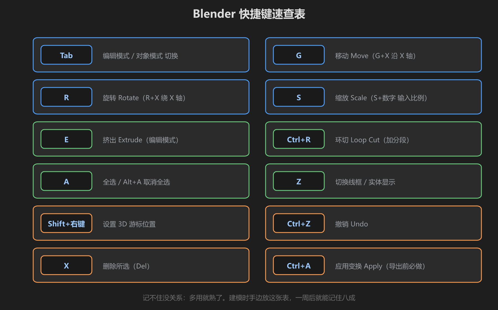
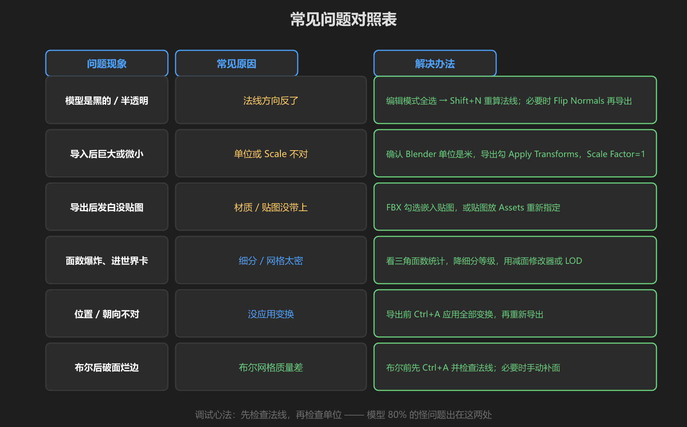
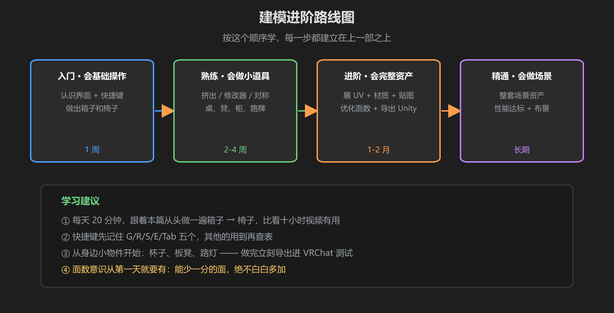

第 6 篇：速查表 — 快捷键、常见问题、进阶路线
学完前五篇，你已经能把一个模型从 Blender 一路送进 VRChat。这篇把整套课程浓缩成三张表：建模时贴在屏幕边的快捷键、出问题先查的对照表、以及继续前进的路线图。
1. 快捷键速查表

图：12 个键覆盖建模 90% 的操作 —— 先记住 G/R/S/E/Tab 五个
| 快捷键 | 功能 | 记忆点 |
|---|---|---|
Tab | 对象模式 / 编辑模式切换 | 建模的门把手，先记这个 |
G / R / S | 移动 / 旋转 / 缩放 | 加 X/Y/Z 锁定轴向，加数字精确输入 |
E | 挤出 Extrude | 编辑模式下选面/边/点后按 |
Ctrl+R | 环切 Loop Cut | 加分段；滚轮调圈数 |
A | 全选 | Alt+A 取消全选 |
Z | 线框 / 实体显示切换 | 快速看内部结构 |
Shift+右键 | 放置 3D 游标 | 新物体生成在游标位置 |
Ctrl+Z | 撤销 | 建模保险丝 |
X | 删除 | Del 键也行 |
Ctrl+A | 应用变换 | 导出前必做（含 Apply 修改器） |
Shift+A | 添加物体 | 菜单里选 Mesh → Cube 等 |
1 / 3 / 7 | 前 / 右 / 顶 正交视图 | 小键盘；5 切透视 |
记忆策略：第一周只强迫自己用 G / R / S / E / Tab 五个键，其他键查到才用。一周后自然就记住了 —— 快捷键是「用熟」的不是「背熟」的。
2. 常见问题对照表

图：出问题先查这张表 —— 八成问题出在法线和单位
| 问题现象 | 常见原因 | 解决办法 |
|---|---|---|
| 模型是黑的 / 半透明 | 法线方向反了 | 编辑模式全选 → Shift+N 重算；必要时 Flip Normals 再导出 |
| 导入后巨大或微小 | 单位或 Scale 不对 | 确认 Blender 单位是米，导出勾 Apply Transforms，Unity Scale Factor = 1 |
| 导出后发白没贴图 | 材质 / 贴图没带上 | FBX 勾选嵌入贴图，或贴图放 Assets 重新指定 |
| 面数爆炸、进世界卡 | 细分 / 网格太密 | 看三角面数统计，降细分等级，用减面修改器或 LOD |
| 位置 / 朝向不对 | 没应用变换 | 导出前 Ctrl+A 应用全部变换，再重新导出 |
| 布尔后破面烂边 | 布尔网格质量差 | 布尔前先 Ctrl+A 并检查法线；必要时手动补面 |
3. 进阶路线图

图：入门 → 熟练 → 进阶 → 精通，每一步都建立在「把东西做出来」上
接下来怎么走：
- 入门（1 周）：把本教程的箱子 → 椅子再做两遍，直到不查教程
- 熟练（2-4 周）：用 E / Ctrl+R / 镜像做桌、凳、柜、路牌等小物件，每个都导进 VRChat 测试
- 进阶（1-2 月）：学会展 UV + 画贴图 + 优化面数，做出「能直接放世界」的完整资产
- 精通（长期）：整套场景资产制作，面数/贴图预算按 VRChat 性能规范执行
最后一句：建模是手艺，不是知识。看十小时教程不如亲手做十个小时。把椅子做完、导出、在 VRChat 里看到它的那一刻，你就正式入门了。
学前检查清单
- 能不看表说出 G / R / S / E / Tab 的用途
- 遇到黑面、尺寸不对、没贴图知道先查对照表
- 明确了自己接下来 1 个月的练习计划